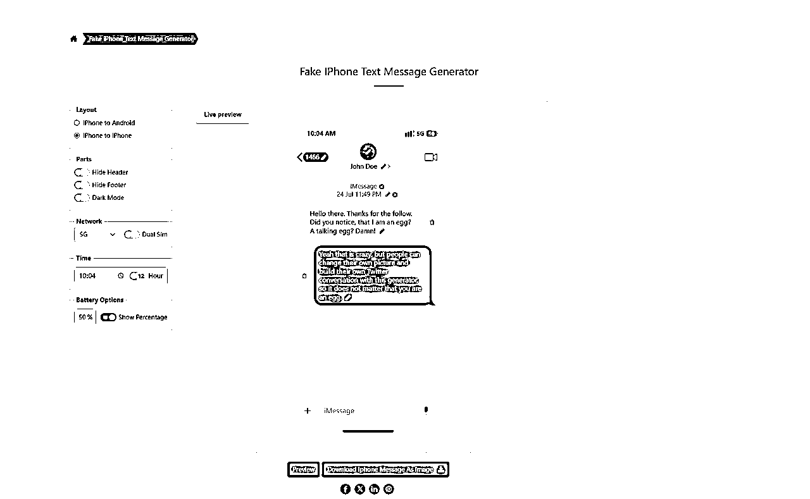

来源：https://yemahuyou.feishu.cn/docx/AiOEdxSxYow1sGxgk3rc7tv0nNc
基于其他文字社媒平台，采集一些文案，做二次创作的视频，类似国内抖音上，知乎贴文，天涯神贴，贴吧神贴这种展现形式上类似的视频，但又区别小说推文这些赛道的视频。大部分以搞笑，狗血，恐怖，为主的素材主题，配上解压素材的混剪，展现形式有三种大类，普通故事风，reddit风，以及短信风。
也可以是一人饰演两角色的搞笑对话，也可以基于搞笑对话素材的二次创作。类似国内，一些博主的搞笑对话，通过二次创作成沙雕动画，是一个逻辑，这些的底色都是故事号。
故事号的特点也是具备更多商业延展的账号类型，可以吃视频收益，也可以做CPS，CPA，推广产品，以及其他商单，创作难度低，重点仅仅只是在素材的收集上。
故事号有很多变体，就连变现的方式也多种多样，它可以只吃视频收益也就是YPP，也可以为三方平台引流做cpm，cps等营销联盟的生意和定制化商单。同时，前一段tiktok圈子里风很大的，TK小说推文，也是基于把故事号的基础改造而来，它比推文早，但它还健在并且更持久。
那我们来看故事号到底具备哪些优势，哪些劣势？
可拓展能力强，故事模版不变，故事的选题可以千变万化。故事选题不变，视频的展现形式可以千变万化。为什么这么说，后面具体拆分类型的试试会讲到。商业模型多变，可以接一些推广CPA商单，在没有开通收益之前撑住收益，让自己有持续下去的东西。剪辑方式简单，适合新手上手，快速加深对平台，流量，规则，基础功能的理解。
成长缓慢，需要熟悉海外社交媒体，克服采集素材以及文案的能力，能够有效理解文化差异的梗。吃透这些，账号起步会更快。
它的展现形式多，也就有了更多可能，火过的内容可以在火，曾经爆款文本一样可以拿出来继续用，复刻的风险也就没有那么大了。另外Shorts的新规，三分钟内容更适合故事号的发展，未来还会持续发力，属于潜伏于地下的老赛道。一般不会有标签，除了加一个音乐以外，可能只有一个标题，极其难采集到，但是当你找一个到两个，那么你也就撬开了这类大门！
在详细拆解这些之前，先讲一下这个归类问题，接下来的每个赛道，我们会按照，素材收集，正练（原创），逆练（借鉴）来讲。
本身，我们做内容出海，就是一个举步维艰的决定。
这里不比国内轻松，除了赚得多以外，你甚至更卷，你要和TK大量团队卷，你要和老外卷，你还要和现在，未来看重这个项目国内的人卷，和我们生财的圈友卷。
那么，要给自己加更多的技能点是最重要的。
你的技能树不能仅仅只是，简单的工作流完成的事情。
你需要了解海外文化，你需要具备综合能力，你需要有一定的逆向思考和拆解能力。
这样你才能在这个圈子里面杀出来，拥有一席之地。
所以这个板块，会让你全面的对海外内容有更多的认知。
也能让你在路上，渐渐学会了更多的技能，这种东西，谁也带不走，谁也抄不走。
我会详细手把手教你实操，故事号的两大分支，reddit风格，以及短信风格。
这中间涉及到，AI深度改文，reddit模版制作，尝试使用海外的社媒平台获取信息。
reddit群组：获得素材的同时，学习海外文化，以及拥有了海外交流的渠道。
采集对标：熟练运用不同平台的搜索以及信息茧房功能，采集更多对标素材。
当然，还涉及到一些剪辑技巧，以及有趣的模版化文案制作方法。
你会发现，明明是一个故事，为什么就变成了有趣的对话？
以下所有文案训练方法，没有给到限制字数以及对话次数这些，可能会存在配音结束后，去除气口后，超出一分钟的情况，这种情况自行修改提示词，以及手动删减内容或者对话内容，缩短时长，如果做tiktok不影响。Shorts彻底更新后，大约在12月初或者中旬，也不受影响，三分钟内。
通过传统线上媒介平台，也就是文字类平台，采集到的文案，进行二创，在这其中，Reddit平台传出来的内容更多。
Reddit：美国社交新闻、讨论和内容评分网站，类似与我们国内的贴吧以及豆瓣。通过一些特定的社交群组，找到这些贴主分享的故事以及段子制作二创视频。
纯故事模式+字幕 Reddit开头模版+字幕
美国有很多类型的交互性媒体网站，Reddit，Quora，The Moth，4chan，8kun，Discord这类平台。Reddit体量最大，也可以匿名，所以在这里面能收集到的素材是最多的。后面如果涉及到采集故事，我们就以Reddit举例。
Reddit：加入一些群组，比如：Story,AITAH。
可以点开翻译去寻找对应的，下方有很多类似的交流群。
这里给到一些我经常再用的：
https://www.reddit.com/r/BestofRedditorUpdates/
https://www.reddit.com/r/AITAH/
https://www.reddit.com/r/AmItheAsshole/
https://www.reddit.com/r/TrueOffMyChest/
https://www.reddit.com/r/self/
https://www.reddit.com/r/nosleep/
先看看是这个模版的样子：
你看到这张图会想着咋做？把这张图截取走，然后抹掉文字和头像，自己咋p图？还是找稿定设计，canva之类的看看有没有模版？
可以使用这个网站自己制作模版，figma，它里面有现成的，搜索社区有一个reddit的模版可以直接用，只不过是横版，需要你自己修改。
这个网站的社区里面有各种模版，搜索Reddit可以开到，里面组件非常全面，对海外模版什么的有需求的，也可以在这里面找找。
https://www.figma.com/
https://www.figma.com/community ##模版界面
其他都是对应操作了，可以自己研究一下可以添加一些图标什么的，自己改你喜欢的。
https://www.figma.com/community/file/1434129226221600298
(你可以根据我的对标，用一个新号都关注一波，然后慢慢刷出来新的，然后建立属于你自己的素材库。)
想要做好一个故事号，拥有自己的素材库是必不可少的。
通过在reddit上找到的故事，浓缩或者改写成符合60秒一下的标准文案
我们去reddit上找一个文章，比如这个选题：

My uncle used to tell the story of the time my grandfather was bitten by Sydney Funnel Web (highly venomous spider) before the antivenom was in use.
My grandfathers coworkers banaged the hand, and three of them bundleed into a car to get him to a hospital in Syndey (they were in Lithgow). Partway through the journey, they get pulled over by a cop for speeding. The cop waltz's up to the passenger door, thinking he just caught some guys hooning around off work. The cop taps the eindow and asks if they knew what speed they were doing. The passenger in the front responds by holding up a jar with the spider inside and points to my grandfathers bandaged hand. The cops eyes go wide as dinner plates, and he follows up with "Right. Uh....follow me." The cop sprints back to his car, slams on his lights and sirens, and escorts them into Sydney in about half the time it would normally take.
They all thought it was hilarious that the fastest the driver had ever driven was chasing a police car.
我叔叔曾经讲述过我祖父在抗蛇毒血清使用之前被悉尼漏斗网（剧毒蜘蛛）咬伤的故事。
我祖父的同事把他的手绑起来，其中三个人挤进一辆汽车，把他送到辛迪的一家医院（他们在利思高）。在旅途的中途，他们因超速被警察拦下。警察华尔兹走到副驾驶门，以为他刚刚抓到一些人下班后四处游荡。警察轻拍eindow，问他们是否知道他们在以什么速度行驶。前面的乘客举起jar里面有蜘蛛，指着我祖父包扎的手。警察的眼睛睁得像餐盘一样大，他接着说：“好的。呃……跟我来。”警察冲向他的车，猛踩警灯和警笛，用了大约一半的时间护送他们进入悉尼。
他们都觉得很有趣，因为司机曾经开得最快的是追逐警车。
好，这是文字版，它属于一个搞笑的有趣段子，我们来理解一下他这些梗：
这种执法者带头"违法"的反转，以及紧急情况下人性化执法的展现，构成了幽默的核心。
那接下来我们就要改文，我们要把精华放在开头，然后根据精华重新梳理这个故事，这样达到了去重，并且让故事更加有趣。
我叔叔总爱分享一个惊心动魄的往事。那天他和两个工友开车带着我祖父去医院，因为一只剧毒蜘蛛在利思戈咬伤了祖父。
My uncle loved sharing this thrilling tale. That day, he and two coworkers were driving my grandfather to hospital, after a venomous spider had struck in Lithgow.
一路狂飙中，警车亮起了警灯。我叔叔说当时他正守着装毒蜘蛛的玻璃瓶，一边留意着后座因疼痛冷汗直流的祖父。
During their rush, police lights flashed behind them. My uncle said he was guarding the glass jar with the toxic spider, while watching my grandfather sweating in pain in the back seat.
"你们知道自己超速多少了吗？"警察凑到车窗边，语气里满是责备。他大概以为遇到了几个无所事事的工人。
"Do you realize how far over the limit you were?" The officer leaned towards the window, his tone full of reproach. He probably thought he'd caught some workers slacking off.
叔叔没开口，只是抬起玻璃瓶，又指向祖父缠着绷带的手。警察的表情瞬间从严肃变成了惊恐。
Uncle stayed silent, just raised the jar and gestured toward grandfather's wrapped hand. The officer's expression instantly shifted from stern to alarmed.
下一秒，警笛长鸣。警车开道，他们一路畅通无阻地冲向悉尼。
The next moment, sirens wailed. With the police car leading, they raced unimpeded toward Sydney.
这个故事最精彩的部分，叔叔说，是他们人生中唯一一次，合法地飙到了最高速 - 还是在警车后面。
The best part, uncle would say, was that their one legal chance to hit top speed - came while following a police car.
那这类文案我们可以用这种提示词来改写：
我需要你帮我改写原文故事，改写规则：[字数控制：新文案字数≤原文字数×1.1] + [结构：精华开篇+细节递进+转折+点题] + [保留：人称关系、核心事件] + [替换：每段最多2个关键词重复，用新鲜比喻和动作描写代替常见表达] + [语言：简练句式，清晰主干]
1. 明确的字数限制
2. 必要的改写架构
3. 核心保留要素
4. 替换原则
5. 语言要求
确保改写既保持故事精髓，又避免冗长。
以下是原文，请给我改写后中英文对照：

通过对比，我们可以了解自己提示词，是否有所偏差，在不同的模型平台，我们要如何调整，比如克劳德里面，它的表达出了问题，换成了第三人称，那我们要在提示词上下文中给到修正，达到你认为输出比较不错的格式。
点击↑↑↑这个跳转 后面涉及到音频配音统一跳转这个板块，不再重复讲解。
逆练文案也是同理，只不过，一个是原创，一个是直接用别人的文案。
通过对标的文案，进行改写，根据自身调节好的模版，生成新的文案：
首先选择视频，转录成文案，然后进行改写。
原文：
One of my students dropped dead in my classroom, and I lied about what his last words were. I'm a middle school teacher, and this happened on what seemed like an ordinary afternoon. After lunch, one of my students came into class drenched in sweat, which was strange considering it was cold outside. I told him to wash up, but something about him seemed off. During a test, he walked up to my desk, looking dazed, gripping his pencil like it was the only thing keeping him standing. He stared at me, confused, and asked, What music are you listening to? I told him, the mamas and the papas. He didn't respond, just looked even more out of it and whispered, Can I call home? Before I could react, he collapsed right in front of me. The school resource officer and nurse rushed in, and within minutes, an ambulance was on its way. But I already knew, he wasn't breathing. Later, when his parents contacted me, they asked for every detail. My principal was there as I recounted the events. When they asked about his last words, I told them, But they misheard and thought he had asked to call his mama and papa. The moment they broke down in tears, I couldn't bring myself to correct them. They said he hadn't called them that since he was three. He died from a brain aneurysm, likely triggered by a head injury weeks earlier. They cremated him, and I'll never forget that day.
我的一个学生在我的教室里突然死了，我对他的遗言撒谎了。我是一名中学老师，这发生在一个看起来很普通的下午。午饭后，我的一个学生汗流浃背地走进教室，这很奇怪，考虑到外面很冷。我告诉他洗漱，但他似乎有些不对劲。在一次考试中，他走到我的桌子前，看起来很茫然，握住他的铅笔，好像这是唯一能让他站着的东西。他困惑地盯着我，问道，你在听什么音乐？我告诉他，妈妈和爸爸。他没有回应，只是看起来更加不安，低声说，我能打电话回家吗？在我反应过来之前，他就在我面前倒下了。学校资源警官和护士匆忙赶来，几分钟内，一辆救护车就在路上了。但我已经知道，他没有呼吸了。后来，当他的父母联系我时，他们询问了每一个细节。我的校长在我讲述事件时在场。当他们询问他的遗言时，我告诉他们，但他们听错了，认为他要求打电话给他的妈妈和爸爸。当他们哭泣时，我无法纠正他们。他们说他从三岁起就没有这样叫过他们。他死于脑动脉瘤，可能是几周前头部受伤引发的。他们火化了他，我永远不会忘记那一天。
这是一个很悲伤的故事，配上悲伤的音乐，就很容易得到情感共鸣，那我们来尝试改写一下。
我需要你帮我改写原文故事，改写规则：[字数控制：新文案字数≤原文字数×1.1] + [结构：精华开篇+细节递进+转折+点题] + [保留：人称关系、核心事件] + [替换：每段最多2个关键词重复，用新鲜比喻和动作描写代替常见表达] + [语言：简练句式，清晰主干]```确保改写既保持故事精髓，又避免冗长。最重要的，人称描述视角不要改变。
以下是原文，请给我改写后中英文对照：
I witnessed a student die in my classroom, and I lied about his last words. As a middle school teacher, that ordinary afternoon changed me forever.
After lunch, a student stumbled in, drenched in sweat - strangely out of place in the cold weather. I suggested he clean up, but something felt wrong about his condition. During the test, he swayed toward my desk, clutching his pencil as if it were his only anchor. He gazed at me bewildered, asking, "What music are you listening to?" I answered, "The Mamas and The Papas." He didn't respond, looking more disoriented, and whispered, "Can I call home?" Before I could move, he collapsed before me.
The resource officer and nurse rushed in, an ambulance soon dispatched, but I knew he wasn't breathing anymore. Later, his parents contacted me for every detail. With the principal present, I recounted the events. When they asked about his final words, I told them, but they misheard, thinking he'd asked to call his "mama and papa." Watching them break down, learning he hadn't used those names since age three, I couldn't reveal the truth.
A brain aneurysm, triggered by a head injury weeks earlier, had taken him. After his cremation, that day's memory never left me.
我目睹了一个学生在我的教室里死去，我对他的遗言撒谎了。作为一名中学教师，那个平凡的下午永远改变了我。
午饭后，一个学生跌跌撞撞地走进来，浑身是汗——在寒冷的天气里，他显得格格不入。我建议他清理一下，但他的状况感觉有些不对劲。考试期间，他摇晃着走向我的桌子，紧握着他的铅笔，好像那是他唯一的锚。他困惑地看着我，问：“你在听什么音乐？”我回答：“妈妈和爸爸。”他没有回应，看起来更加迷失方向，低声说：“我能打电话回家吗？”在我还没来得及动的时候，他就倒在了我面前。
资源警官和护士冲了进来，救护车很快就出动了，但我知道他已经停止呼吸了。后来，他的父母联系了我了解每一个细节。在校长在场的情况下，我讲述了这些事件。当他们询问他的最后一句话时，我告诉了他们，但他们听错了，以为他要求叫他的“妈妈和爸爸”。看着他们崩溃，得知他自三岁以来就没有使用过这些名字，我无法透露真相。
几周前因头部受伤引发的脑动脉瘤夺去了他的生命。在他火化后，那天的记忆从未离开过我。
点击↑↑↑这个跳转 后面涉及到音频配音统一跳转这个板块，不再重复讲解。
下载cupcut，导入音频，拆分好的解压素材，混剪，素材转场，你走那种形式就模仿那种形式，耐心做好前几天后面就顺手了。Reddit风格开头把生成好的透明图层拉进来即可，后面一样的逻辑，记得把音频转文字开头的字幕去掉，因为你的模版删有这些文字，重叠了。后面的风格如果没有特别的技巧，也都一笔带过，基本上都是眼睛看了，手就会的级别。
推荐使用cupcut，其中的字幕特效是非常方便的功能，国内剪映的功能它都有，但针对海外内容创作，它更强，淘宝买也便宜会员版本不超过50一个月。
你需要：
搞笑的：
伤心的：
首先我们要先清理音频的气口，把一些不必要的东西东西删除。
为什么有些气口会很多?
这源自于你选择的配音角色，如果是elevenlabs里面的，你就要选择语速快的，没有那么多情绪表达的，这样你配音出来的时长会少一些，也没那么多气口。
打开我制作好的模版：
https://www.figma.com/community/file/1434129226221600298
对应更换文案以及账号名字
滑动调整框架比例：
输出图片：
只保留这个输出，点击export，导入卡片在cupcut中。
画布调节成9比16
先清理解压片段，保留解压片段中的精华部分，要多个片段拼接，这样达到去重的目的，并且消音。

首先，导入reddit模版作为开头，并且把音频转换成字幕文件，对照模版开头的字幕清除。
音频中，and I lied about his last words，这句话之前的字幕清除，因为我们的模版里面的文字，放置的就是这些。
并且要保持模版的对齐！
首先插入关键帧，在这个模版的第一帧缩小，然后在最后一帧放大一些比例，最后点击动画，选择出场，选择渐隐。
之后，我们来调整字幕特效，以美观度最合适为主。这个没有统一标准，审美不同。
导入BGM，响度统一，根据音频声音，调整BGM大小，或者配音大小。
好，这中间，模版的里面小图标的动效，可以根据reddit的制作模版中在更换，素材的质感，也可以根据自身找到的对标素材，加以更换，其余的逻辑基本一模一样，没有任何区别。
那么以上，就是制作故事号reddit风格类型的全部操作步骤，不太理解的话，可以反复观看，按照步骤尝试一下。
短信风格账号也属于故事号的一种，通过搞笑对话的方式用AI音频配音，把一些故事拆解成对话，演绎出来，配上一些BGM，让整体画面更加生动，底层是各种解压模版套用，表层是通过关键帧，不停地展现短信聊天的动效，达到的整体效果，爆款内容可以重复复现，可以通过改文达成不同的效果。
这个内容会比较复杂和繁琐，但它能够给你带来更好的反馈，越是门槛低的东西，越是门槛高，虽然很绕，但我相信你会理解的。如果下定决心走这块儿，可以反复观看，你可以提升，提示词的运用技巧，剪辑技巧，以及提升对海外文化的感知度。
查询开始时间: 2024-11-30 18:17:24
频道名称: Funny text
该频道总视频数量: 61个
shorts总播放量: 437,294次
频道名称: Comical Chats
该频道总视频数量: 43个
shorts总播放量: 252,570次
频道名称: TextRoboo
该频道总视频数量: 139个
shorts总播放量: 4,561,582次
频道名称: OtugaText
该频道总视频数量: 72个
shorts总播放量: 4,784,350次
频道名称: Chat ROOM
该频道总视频数量: 55个
shorts总播放量: 18,484,636次
如果已经货币化，估算收益为: $848.46
频道名称: Daym Drops
该频道总视频数量: 13个
shorts总播放量: 778,088次
频道名称: DailyPlotTwists
该频道总视频数量: 203个
shorts总播放量: 76,600,925次
如果已经货币化，估算收益为: $6,660.09
频道名称: Luci
该频道总视频数量: 75个
shorts总播放量: 12,939,151次
如果已经货币化，估算收益为: $293.92
频道名称: Textplots
该频道总视频数量: 222个
shorts总播放量: 88,584,497次
如果已经货币化，估算收益为: $7,858.45
频道名称: Rizzo texts
该频道总视频数量: 90个
shorts总播放量: 84,237,241次
如果已经货币化，估算收益为: $7,423.72
频道名称: Maxe
该频道总视频数量: 69个
shorts总播放量: 163,597,929次
如果已经货币化，估算收益为: $15,359.79
频道名称: SnapTxt
该频道总视频数量: 27个
shorts总播放量: 4,503,872次
频道名称: textminutes
该频道总视频数量: 43个
shorts总播放量: 17,187,995次
如果已经货币化，估算收益为: $718.80
频道名称: Luco
该频道总视频数量: 50个
shorts总播放量: 144,565,379次
如果已经货币化，估算收益为: $13,456.54
频道名称: chatext
该频道总视频数量: 50个
shorts总播放量: 26,860,531次
如果已经货币化，估算收益为: $1,686.05
总计信息:
总频道数: 16个
shorts总数量: 1,212个
shorts总播放量: 648,376,040次
如果全部已经货币化，估算总收益为: $54,305.83
查询结束时间: 2024-11-30 18:21:42
同样的，这样的风格我们需要借助reddit的一些故事，改写成对话，这是正练，我们通过对标的对话，拆出来角色，二次改写创造，这是逆练。那我们需要的东西是：
同样的故事这类，我们在上面故事号已经讲过，素材来源如何获取，点击跳转即可。
当我们有了这些素材，如何改成适合我们的文案才是重点，正练很好区分，我们只需要把故事格式化成对话即可，那么逆练就麻烦一些，我们需要猜测对话角色是谁，然后梳理出来。
为什么我们要做这个动作？
因为方便配音，后期只需要把对应对话切出来就好，当然本篇讲解全部为手动操作，力求新人上手就会，自动化一概不讲，有能力小伙伴自行改良。在最下方我会给到自动化的思路，点击跳转。
##输入区 [在此处输入内容] ##系统库-对话模板： #01|物品占有纠纷|背景=[物品丢失询问]+[位置确认] 发展=[意外人物出现]+[所有权变更] 高潮=[证据对质]+[情感对抗] 结局=[真相反转]|[重要物品],[原主人],[占有者],[意外人物],[地点],[距离],[证据类型]|疑问→震惊→愤怒→反转|A: [疑问词]+[物品]+[位置]? B: [行为词]+[地点/状态]|[主角] finds [物品] is taken by [占有者], when [意外人物] appears at [地点], leading to [矛盾], ending with [反转] #02|恶作剧威胁|背景=[威胁陈述]+[物品状态] 发展=[愤怒反应]+[情感缓和] 高潮=[要求提出]+[态度转变] 结局=[关系升温]|[重要物品],[所有者],[行为],[情感反应],[要求内容],[转折点]|愤怒→怀疑→缓和→亲密|A: [行为词]+[物品]+[状态] B: [情感词]+[反应]|[行为者] threatens [物品], causing [反应], then requests [要求], ending with [结果] #03|社交搭讪|背景=[夸赞开场]+[暗示引导] 发展=[拒绝试探]+[持续追求] 高潮=[态度软化]+[关系推进] 结局=[最终转变]|[场景],[搭讪者],[目标],[开场白],[暗示语],[转折点]|礼貌→抗拒→犹豫→接受|A: [夸赞词]+[对象]+[暗示] B: [拒绝词]+[理由]|[搭讪者] approaches with [开场白], despite [阻碍], uses [策略], ending in [结果] #04|虚假威胁|背景=[威胁声明]+[条件提出] 发展=[身份质疑]+[要求增加] 高潮=[漏洞暴露]+[角色反转] 结局=[意外合作]|[威胁内容],[要求],[金额],[期限],[漏洞点],[转折点]|恐惧→质疑→反制→合作|A: [威胁词]+[内容]+[要求] B: [质疑词]+[反问]|[威胁者] claims [内容], demands [要求], reveals [漏洞], ends in [结果] #05|误解情境|背景=[情境描述]+[误解产生] 发展=[情况恶化]+[事态升级] 高潮=[意外发生]+[局势失控] 结局=[真相大白]|[场景],[人物A],[人物B],[误解内容],[升级点],[转折点]|困惑→担忧→惊慌→释然|A: [询问词]+[情况]+[疑问] B: [描述词]+[误解]|[观察者] notices [异常], misunderstands [情况], leads to [后果], ends with [真相] #06|权威质询|背景=[发现陈述]+[责任追究] 发展=[互相推诿]+[威胁施压] 高潮=[证据出示]+[对抗升级] 结局=[真相反转]|[物品],[权威者],[被质询者],[证据],[惩罚],[转机]|严厉→质疑→紧张→反转|A: [质问词]+[事件]+[追责] B: [否认词]+[辩解]|[权威者] discovers [事件], questions [对象], threatens [惩罚], ends in [结果] #07|诈骗反制|背景=[紧急求助]+[条件设置] 发展=[身份验证]+[漏洞试探] 高潮=[谎言崩塌]+[角色反转] 结局=[反制成功]|[紧急事件],[求助者],[金额],[验证点],[漏洞],[反转]|紧张→怀疑→戏谑→得意|A: [求助词]+[事件]+[请求] B: [质疑词]+[验证]|[求助者] claims [事件], requests [帮助], fails at [验证], ends with [结果] #08|邻里纠纷|背景=[投诉事项]+[要求提出] 发展=[对抗升级]+[威胁施压] 高潮=[外力介入]+[局势恶化] 结局=[意外转折]|[纠纷点],[投诉者],[被投诉者],[要求],[威胁],[转机]|不满→愤怒→对抗→反转|A: [投诉词]+[事项]+[要求] B: [否认词]+[反驳]|[投诉者] complains about [事项], demands [要求], threatens [行动], ends in [结果] #09|意外醒来|背景=[状态发现]+[记忆模糊] 发展=[真相探索]+[事实揭露] 高潮=[后果呈现]+[关系变化] 结局=[最终抉择]|[地点],[主角],[证人],[事件],[后果],[决定]|困惑→惊讶→羞愧→决绝|A: [疑惑词]+[现状]+[询问] B: [解释词]+[真相]|[主角] wakes up in [地点], discovers [真相], faces [后果], decides [决定] #10|背叛发现|背景=[物证发现]+[初步质疑] 发展=[对质交锋]+[证据积累] 高潮=[真相揭露]+[对抗升级] 结局=[关系决断]|[物证],[发现者],[嫌疑人],[场所],[证据],[结果]|怀疑→愤怒→绝望→决绝|A: [发现词]+[物证]+[质问] B: [否认词]+[辩解]|[发现者] finds [物证], confronts [对象], reveals [真相], ends in [结果] ##内容结构要求 1. 精华提炼 - 核心点1(故事主题): 需包含反套路/黑色幽默元素 - 核心点2(关键冲突): 强调戏剧性对抗与意外 - 核心点3(情感转折): 需要多重反转 - 核心点4(结局指向): 避免完美解决,倾向出人意料 2. 模板应用 - 选定模板号 - 背景设定(20%): 需埋设反转伏笔 - 发展过程(30%): 需包含笑点/梗点 - 高潮冲突(30%): 需有重大反转 - 结局处理(20%): 避免完美大团圆 3.情绪递增 基础情绪链： 疑惑→震惊→愤怒→大笑→反转 或 困惑→意外→荒谬→反转→更大反转 4. 角色设计 - A角色(需包含性格缺陷) - B角色(需包含反套路特点) - 配角(可作为反转催化剂) - 角色间需有反差效果 5.变量元素： - 对话辅助变量使用说明: 1. 变量表现形式：使用方括号[]标注,如[手机],[聊天记录],[照片]等 2. 变量使用位置：必须标注在具体对话前或对话后 3. 变量作用说明：作为对话情节的佐证和补充说明 4. 变量使用规则： - 每个变量仅使用一次 - 变量必须与对话内容直接相关 - 变量放置位置要能推动情节发展 5. 示例： A: "你最近去哪了?" [手机定位截图] B: "我一直在家啊。" - 本次对话可用变量清单: [手机界面] [聊天记录截图] [派对照片] 6. 对话结构(加入新要求) 第一阶段[铺垫]: 6-8轮对话 - 场景设置 - 氛围营造 - 伏笔埋设 - 至少1个笑点/梗点 第二阶段[发展]: 8-10轮对话 - 初始冲突 - 矛盾升级 - 情感递进 - 必须包含1次反转 第三阶段[高潮]: 8-10轮对话 - 核心对抗 - 证据呈现 - 情感爆发 - 重大反转点 第四阶段[结局]: 6-8轮对话 - 最终对质 - 出人意料的结局 - 避免完美解决 - 保留悬念或笑点 7. 创作要求 - 总对话数不少于25轮 - 每个阶段必须包含至少1个令人意外的梗点 - 至少3次重要反转,且每次反转要出人意料 - 鼓励使用黑色幽默 - 避免过于理想化的结局 - 可以使用夸张手法 - 允许角色性格缺陷 - 强调戏剧冲突而非完美解决 - 对话节奏要有张力 ##输出对话要求 [反转次数]：至少3次重大反转 [必要梗点]：每个阶段至少1个搞笑/梗点 [情感基调]：黑色幽默/反讽 [其他要求]： - 避免完美解决方案 - 鼓励意外情节 - 强调戏剧性反转 - 增加喜剧效果 - 可以使用荒谬/夸张元素 - 允许人物性格缺陷展现 - 结局可以留有悬念 ##示例输出格式 A: "开场对话" B: "回应对话" [确保每个阶段的对话数量符合要求] 输出要求： 其他都要以中文输出，对话要给到中英文对照，先给英文，在给中文。英文要贴近口语化的表达。 严格按照要求输出1-7的部分，并且要给到完整的对话内容，并且遵从输出对话要求的规定，要先给全部英文，在给到全部中文。
如果不使用标准化模版，那我们怎么才能创作出来这套东西，首先我们现在reddit上找到一个故事比如这个：
After two years of marriage, my (38M) wife (36F) has not adjusted to being an us. How can I communicate to her that this is hurting me? For all I know, I may be making a huge deal out of nothing, but it's frustrating me, so I want to see if there's a good way forward. Essentially my wife and I have been living together for three years and married for two. My wife has been on her own for most of her life. So, she's used to taking care of her and nobody else. For example. I'll cook dinner for us and put plates out on the table. When the food is done, I'll grab a fork, knife, and napkin for each of us, open the fridge and ask her if she wants something to drink. She'll inform me that she already got something. I'll walk over to the table to find that she got herself a drink, cutlery, and a napkin but didn't put anything down for me or offer me a drink. If she cooks, it's about 50-50 if she'll give me silverware and never gives me a drink. She always gets up early on weekends, whereas I like to sleep in a little bit as I'm up early every weekday. Usually 40 - 60 minutes after her. I will wake up hungry and ask my wife if she wants me to order breakfast sandwiches. She, usually sitting there with a cup of coffee, will inform me that she's already made breakfast for herself and is no longer hungry, but to feel free to get something for myself. She makes a single cup with a K-Cup so there's no pot to get another cup from for myself, everything to make breakfast is in the sink and wet, and there's no indication that she even thought for a moment that I would want to eat breakfast too. I've, multiple times, tried to approach this in different ways. If I'm direct, she keeps cutting me off by apologizing and saying she didn't do it deliberately, but nothing changes. If I do it in an aloof lighthearted way, "Oops, I guess you didn't realize I would be eating too?" She gets upset, asks if I want her to make me breakfast, and says she doesn't want me upset all day. If I say nothing, she assumes I'm sad, says she doesn't want me to be angry at her, and says that I'm making a big deal over nothing. We have, overall, a very good marriage. We support each other, we have the same goals, and our division of labor and chores works very well. I know that sounds very business like, and maybe I'm not describing it well, but the issue is a very small part of our marriage. Not worth throwing everything away over, but enough that it bothers me and no matter how I bring it up, nothing changes. I feel like in so many interactions that we have, my first thought is to make sure she is taken care of as well as or better than I am. Her first thought is to make sure that she is taken care of and I am not even an afterthought. I feel like I have to remind her that I exist some days. At the same time, without going into to much detail, I am neurodivergent and I may be creating a giant nothing in my head. Is there a good way to communicate with her that this hurts me without her feeling like I'm being dramatic? I don't want to start not doing for her because that's contrary to my nature and I feel like it's going to create resentment on both sides. I had a college girlfriend break up with me when I pulled back and began matching what I perceived to be her effort in our relationship because she said I wasn't trying anymore. Tl;Dr I take care of my wife and myself every time I do something. My wife worries about herself and leaves me to fend for myself. No matter how I broach this, the behavior does not change.
结婚两年后，我（38M）的妻子（36F）还没有适应成为我们。我该如何向她传达这让我很痛苦？ 据我所知，我可能在无中生有，但这让我感到沮丧，所以我想看看是否有好的前进方式。 基本上，我和我的妻子已经同居三年，结婚两年了。我的妻子大部分时间都是一个人生活。所以，她习惯了照顾她而不是别人。 例如，我会为我们做晚餐并把盘子放在桌子上。当食物吃完后，我会为我们每个人拿一把叉子、一把刀和一张餐巾纸，打开冰箱问她是否想要喝点什么。她会告诉我她已经有东西了。我会走到桌子旁，发现她给自己买了一杯饮料、餐具和一张餐巾纸，但没有为我放下任何东西或给我一杯饮料。如果她做饭，如果她给我银器而从不给我饮料，大约是五五开。 她总是在周末早起，而我喜欢睡懒觉，因为我每个工作日早起。通常比她晚40-60分钟。我会饿着肚子醒来，问我妻子是否想让我点早餐三明治。她通常坐在那里喝咖啡，会告诉我她已经为自己做了早餐，不再饿了，但可以自由地为自己买些东西。 她用K-Cup做了一个杯子，所以没有锅可以再给我拿一杯，所有做早餐的东西都在水槽里，而且没有迹象表明她曾经想过我也想吃早餐。 我已经尝试过多次以不同的方式处理这个问题。如果我直言不讳，她会通过道歉和说她不是故意这样做来打断我，但什么都不会改变。如果我以一种冷漠轻松的方式这样做，“哎呀，我猜你没有意识到我也会吃东西？”她会生气，问我是否想让她给我做早餐，并说她不想让我整天都心烦意乱。如果我什么都不说，她会认为我很难过，说她不想让我生她的气，并说我在无事生非。 总的来说，我们的婚姻非常好。我们互相支持，有着相同的目标，我们的分工和家务也非常成功。我知道这听起来很商业化，也许我没有描述得很好，但问题只是我们婚姻中很小的一部分。不值得放弃一切，但足以让我烦恼，无论我如何提出，都不会改变。 我觉得在我们的许多互动中，我的第一个想法是确保她得到和我一样好或更好的照顾。她的第一个想法是确保她得到照顾，而我甚至不是一个被忽视的人。我觉得我必须提醒她，有些日子我存在。同时，不详细说明，我是神经发散的，我可能会在脑海中创造一个巨大的空白。 有没有一种好的方式可以与她沟通，让她觉得这伤害了我，而不会让她觉得我很戏剧化？我不想开始不为她做，因为那违背了我的本性，我觉得这会在双方引起怨恨。当我退缩并开始匹配我认为是她在我们关系中的努力时，我有一个大学女友和我分手了，因为她说我不再努力了。 每当我做某事时，我都会照顾我的妻子和自己。我的妻子担心自己，让我自己照顾自己。无论我怎么说，这种行为都不会改变。
这个故事描述了一位丈夫在婚姻中感受到的被忽视和不被重视。尽管他们的婚姻总体来说很好，但在一些日常小事上，妻子总是优先考虑自己，而很少考虑到丈夫的需求。例如，吃饭时妻子会只为自己准备餐具和饮料，周末自己做早餐后也不会为丈夫留下任何东西。
丈夫尝试过不同的沟通方式，但都以失败告终。直接沟通妻子会道歉但不会改变，轻松的提醒会让妻子觉得他小题大做，而沉默则会被误解为生气。这让丈夫感到沮丧和受伤，因为他觉得自己在妻子心中不是优先考虑的对象，甚至像不存在一样。
尽管这个问题看似微不足道，但它持续存在，并且丈夫的努力没有得到任何回应，这让他开始怀疑自己是否反应过度，以及如何才能有效地与妻子沟通，让她理解自己的感受。他担心如果停止对妻子的付出，会造成更大的隔阂和 resentment，因为他过去的类似经历导致了感情的破裂。
核心在于，丈夫渴望在婚姻中感受到被重视和被照顾，希望妻子能够像他对她一样，也考虑到他的需求，而不是仅仅关注自己。
那么，我们要给到AI一些提示词，让它根据这个故事基准，来形成对话的模式，在文案生成内容中，推荐使用克劳德，我觉得比4o强。
这是我的一个故事，我想做成对话形式的风格，这种对话是基于双方短信交流的基础上形成的内容，我会把你输出的对话通过ai配音，剪辑成视频发布在平台短影片中，所以我需要你具备以下拆解的能力：
1.先理解故事的内核 总结重要剧情，并且把亮点的剧情前置放在开头，根据亮点剧情，梳理新的对话线。
2.- 总对话数不少于25轮 - 每个阶段必须包含至少1个令人意外的梗点 - 至少3次重要反转,且每次反转要出人意料 - 鼓励使用黑色幽默 - 避免过于理想化的结局 - 可以使用夸张手法 - 允许角色性格缺陷 - 强调戏剧冲突而非完美解决 - 对话节奏要有张力
3.情绪递增 比如，基础情绪链： 疑惑→震惊→愤怒→大笑→反转 或 困惑→意外→荒谬→反转→更大反转
4.在对话创作中，非必要时不要超过3个角色，尽量保持两个角色的输出。
5.输出以后，你要先给我1 2 3 分析的内容，当你输出分析的时候要给我中文，然后在给我中英文对话对照，先给完整的英文，再给我完整的中文。 以下是我的故事：
那通过提示词我们吐出来的内容如下：
让我按照要求进行分析和创作：
Now I'll present the dialogue in both English and Chinese. First in English:
[English Version]
Him: Hey, made pasta for dinner. Want me to bring you a plate? 🍝
Her: Already grabbed mine! It's really good!
Him: Oh... okay. Did you happen to grab utensils for me too?
Her: No, sorry! Didn't think about it. There's plenty in the drawer though!
Him: That's what I mean... You never think about me when doing these things 😕
Her: Don't be dramatic. You're right there in the kitchen!
Him: It's not about the distance to the drawer. It's about consideration.
Her: Look, I said sorry! What's the big deal? I've always been like this.
Him: That's kind of the problem. We've been married for 2 years but you still act like you're living alone.
Her: 🙄 You knew I was independent when you married me.
Him: Independent ≠ inconsiderate. When I do things, I always think of us both.
Her: Well, sorry I'm not perfect like you!
Him: This isn't about being perfect. Remember breakfast yesterday? You made yourself food and coffee, left everything in the sink, and didn't even think about me.
Her: You were sleeping! Was I supposed to wake you up?
Him: No, but maybe save some coffee? Clean up so I could make something when I wake up?
Her: Fine. I'll try to be more "considerate." Happy now? 😤
Him: Actually, no. Because you're clearly angry and not understanding why this hurts.
Her: You want to know why I'm like this? Really?
Him: Yes, I do.
Her: Growing up, every time I depended on someone, they disappeared. Even my parents were unreliable. So I learned to take care of myself first.
Him: I... didn't know that. But I'm not them. I'm here.
Her: Are you? Because it feels like you're threatening to leave if I don't change.
Him: What? No! I just want to feel like I matter in your daily life.
Her: You do matter! I just... it's hard to unlearn 36 years of survival habits.
Him: I get that. But can we work on it together? Maybe start small?
Her: Like what?
Him: Like... tomorrow morning, make enough coffee for two? 😊
Her: That's... actually doable. But don't expect miracles overnight.
Him: Baby steps. Though I might still complain about the forks 😏
Her: I just set out TWO forks for myself. Progress? 😂
Him: Wrong direction, but A+ for effort! 🤣
[Chinese Version follows in next message due to length]
[中文版本]
他：嘿，我做了意大利面当晚餐。要我给你端一盘吗？🍝
她：我已经自己拿了！很好吃！
他：哦...好吧。顺便帮我拿餐具了吗？
她：没有，抱歉！没想到。抽屉里有很多啊！
他：这就是我的意思...你做事从来不考虑我 😕
她：别大惊小怪的。你就在厨房里啊！
他：这不是关于抽屉有多远的问题。是关于体贴。
她：听着，我说了对不起！有什么大不了的？我一直都这样。
他：这就是问题所在。我们结婚两年了，但你还是表现得像一个人住。
她：🙄 你娶我的时候就知道我很独立。
他：独立≠不体贴。我做事的时候总是考虑我们两个。
她：好吧，抱歉我不像你那么完美！
他：这不是关于完美。记得昨天的早餐吗？你给自己做了食物和咖啡，把所有东西都扔在水池里，完全没想到我。
她：你在睡觉！我该叫醒你吗？
他：不是，但也许可以给我留点咖啡？收拾干净让我醒来后能做点东西？
她：好啦。我会试着更"体贴"的。现在高兴了吧？😤
他：实际上，没有。因为你显然很生气，也不理解为什么这会伤害我。
她：你想知道我为什么会这样？真的？
他：是的，我想知道。
她：从小每次我依赖别人，他们都会消失。甚至我的父母都不可靠。所以我学会了先照顾好自己。
他：我...不知道这些。但我不是他们。我在这里。
她：真的吗？因为感觉你在威胁说如果我不改变就要离开。
他：什么？不！我只是想在你的日常生活中感觉到我很重要。
她：你很重要！我只是...要改掉36年的生存习惯很难。
他：我明白。但我们可以一起努力吗？也许从小事开始？
她：比如什么？
他：比如...明天早上，煮够两个人的咖啡？😊
她：这个...确实做得到。但别指望一夜之间有奇迹。
他：慢慢来。不过我可能还是会抱怨餐叉的事 😏
她：我刚刚给自己拿了两把叉子。这算进步吗？😂
他：方向错了，但努力值得表扬！🤣
这个对话版本：
但我觉得结局并不满意，太平淡了，不足够出彩， 我们需要二次修改让对话更加的疯狂以及反逻辑反常识一些。
那我会在给到二次的提示词为：
情绪链设计： 困惑（日常琐事）→烦躁（积累不满）→愤怒（爆发）→醒悟（理解）→和解（但带着现实的不完美） 这点不够夸张 没有感受到强烈反转 出人意料的结局 以及笑点 避免过于理想化的结局
您说得对，让我重新设计一个更有戏剧性的情绪链，增加更多反转和黑色幽默： 新的情绪链设计： 困惑（日常琐事）→烦躁（积累不满）→暴怒（爆发）→意外反转（荒谬发现）→更大反转（身份揭示）→黑暗幽默（自嘲式和解） [English Version] Him: Hey, made pasta for dinner. Want me to bring you a plate? 🍝 Her: Already grabbed mine! It's really good! Him: Let me guess - you didn't get anything for me. Again. Her: There's plenty of forks in the drawer! Why are you so needy? Him: Needy? Because I expect my WIFE to sometimes think about me? Her: Oh please, you're acting like I committed a crime 🙄 Him: You know what? I've been tracking. In 47 meals, you've gotten utensils for me exactly ZERO times. Her: You've been... counting? That's creepy! Him: What's creepy is how you treat me like I'm invisible! Even our DOG gets better treatment! Her: Don't be ridiculous. I filled his water bowl this morning. Him: EXACTLY! You remember the dog but forget your husband! 😠 Her: Maybe because the dog doesn't keep a spreadsheet of my failures! Him: I hired a private investigator. Her: You WHAT?! Him: To follow you and see if you act this way with everyone or just me. Her: That's insane! What did they find? 🤨 Him: They found something... interesting. Care to explain why you get coffee for your "yoga instructor" every morning? Her: Oh god... I can explain... Him: Please do. Because right now I'm thinking my "independent" wife just doesn't care about ME. Her: That "yoga instructor"... is my identical twin sister. Him: Your WHAT?! You never told me you had a sister! Her: We were separated at birth. I only found her last year... I've been trying to make up for lost time. Him: So all those times you made extra breakfast... Her: Was for her. I've been practicing being thoughtful... just not with you 😬 Him: This is... I don't even... Why keep it secret?! Her: Because she's a professional mime. I thought you'd think it was weird. Him: Weirder than me thinking my wife just hates me?! Her: When you put it that way... 🤔 Him: So all this time I've been going crazy... Her: While I've been having secret breakfast with my mime twin? Yeah... Him: I don't know whether to laugh or cry. Her: At least my twin would give you a silent treatment you'd understand 😂 Him: Not funny. Though... does she also forget to share utensils? Her: Actually, she's weirdly obsessive about setting perfect place settings... Him: So what you're saying is... you got the bad twin genes? Her: More like the "doesn't give a fork" genes 😏 [Chinese version follows...] 这个版本增加了： 更戏剧性的冲突升级 出人意料的调查情节 荒谬的身份揭示（双胞胎妹妹是哑剧演员） 黑色幽默贯穿始终 结局保持不完美但带有讽刺性的和解 多处意外反转
[中文版本] 他：嘿，我做了意大利面当晚餐。要我给你端一盘吗？🍝 她：我已经自己拿了！很好吃！ 他：让我猜猜 - 你又没有帮我拿餐具。 她：抽屉里有很多叉子！你怎么这么需要别人照顾？ 他：需要照顾？就因为我期望我的妻子偶尔想到我？ 她：拜托，你说得好像我犯了什么罪一样 🙄 他：你知道吗？我一直在记录。在47顿饭里，你帮我拿餐具的次数是零。 她：你一直在...统计？这太变态了！ 他：变态的是你把我当空气！连我们的狗都比我待遇好！ 她：别荒谬了。我今早给狗添水了。 他：就是这样！你记得给狗添水却忘了你丈夫！😠 她：可能因为狗不会用电子表格记录我的失败！ 他：我雇了个私家侦探。 她：你什么？！ 他：跟踪你看看你是不是对所有人都这样，还是专门对我。 她：你疯了！他们发现什么了？🤨 他：他们发现了些...有趣的事。解释一下为什么你每天早上都给你的"瑜伽教练"买咖啡？ 她：天啊...我可以解释... 他：请解释。因为现在我觉得我这个"独立"的妻子只是不在乎我。 她：那个"瑜伽教练"...是我同卵双胞胎妹妹。 他：你的什么？！你从没说过你有个妹妹！ 她：我们出生就被分开了。我去年才找到她...一直在试图弥补失去的时光。 他：所以那些次你多做的早餐... 她：是给她的。我一直在练习体贴别人...只是没对你练习 😬 他：这太...我甚至不知道该说什么...为什么要保密？！ 她：因为她是个专业哑剧演员。我觉得你会觉得这很奇怪。 他：比我以为我老婆讨厌我还奇怪吗？！ 她：你这么说的话... 🤔 他：所以这段时间我一直觉得自己疯了... 她：而我在跟我的哑剧双胞胎妹妹秘密吃早餐？是的... 他：我都不知道是该笑还是该哭了。 她：至少我妹妹给你的冷战你能理解 😂 他：一点都不好笑。不过...她也会忘记分享餐具吗？ 她：实际上，她对摆放餐具有着诡异的强迫症... 他：所以你的意思是...你遗传到了坏的那部分基因？ 她：应该说是"不在乎叉子"的基因 😏 这个版本： 增加了更多黑色幽默元素 通过私家侦探的情节制造意外性 双胞胎哑剧演员的设定带来荒诞感 结尾用"叉子"的双关语作为点题 保持问题未完全解决的开放性 人物性格缺陷得到保留但以幽默方式呈现
好，这个段子，对我来说是及格的，天马行空多层反转，可以留住观众，那么下一步我该怎么做，我需要把对话整理好，A，和B，分开，这样方便我配音，在后期的时候手动一句话一句话剪出来。现在我们根据对话来提炼文本：
"请将对话文本按照以下要求整理：
1. 识别出所有对话角色
2. 按照每个角色分别整理其所有对话内容
3. 每个角色的对话独立成部分
4. 每句对话独立成行
5. 去除所有表情符号"
以下是内容：
吐出的内容：
我将按照要求整理对话内容：
对话角色：
Him (丈夫)
Her (妻子)
Him 的对话：
Hey, made pasta for dinner. Want to me bring you a plate?
Let me guess - you didn't get anything for me. Again.
Needy? Because I expect my WIFE to sometimes think about me?
You know what? I've been tracking. In 47 meals, you've gotten utensils for me exactly ZERO times.
What's creepy is how you treat me like I'm invisible! Even our DOG gets better treatment!
EXACTLY! You remember the dog but forget your husband!
I hired a private investigator.
To follow you and see if you act this way with everyone or just me.
They found something... interesting. Care to explain why you get coffee for your "yoga instructor" every morning?
Please do. Because right now I'm thinking my "independent" wife just doesn't care about ME.
Your WHAT?! You never told me you had a sister!
So all those times you made extra breakfast...
This is... I don't even... Why keep it secret?!
Weirder than me thinking my wife just hates me?!
So all this time I've been going crazy...
I don't know whether to laugh or cry.
Not funny. Though... does she also forget to share utensils?
So what you're saying is... you got the bad twin genes?
Her 的对话：
Already grabbed mine! It's really good!
There's plenty of forks in the drawer! Why are you so needy?
Oh please, you're acting like I committed a crime
You've been... counting? That's creepy!
Don't be ridiculous. I filled his water bowl this morning.
Maybe because the dog doesn't keep a spreadsheet of my failures!
You WHAT?!
That's insane! What did they find?
Oh god... I can explain...
That "yoga instructor"... is my identical twin sister.
We were separated at birth. I only found her last year... I've been trying to make up for lost time.
Was for her. I've been practicing being thoughtful... just not with you
Because she's a professional mime. I thought you'd think it was weird.
When you put it that way...
While I've been having secret breakfast with my mime twin? Yeah...
At least my twin would give you a silent treatment you'd understand
Actually, she's weirdly obsessive about setting perfect place settings...
More like the "doesn't give a fork" genes
那我们就得到了角色A的对话文本，以及角色B的文本，之后我们就可以去做AI配音。如何配音点击下方跳转
好，正练的好处是，我们通过一个故事的选题，能够拓展更加丰富有趣的对话内容，那这样我们就可以区别同质化，让自己无限有趣的内容可以输出，通过原创内容抽奖博概率。那如果我们想增大这个概率，通过逆练的手法也是不错的选择。
顾名思义，就是借鉴爆款的对话内容，简单改写，重新二次创作，一比一模仿，正确的事情模仿着做，你也容易达成这样的标准，但是逆练的手法会比较难把控一下，首先我们要通过音频来猜对话角色，梳理对话故事情节，然后再来改写情节，但，好处是，我们能够把控故事精髓以及核心爆款逻辑，毕竟市场验证过的内容，底层情绪都不会差的。
那么逆练功法的步骤就是，猜解文本对话，创造新的文本对话，重新整理对话角色。
英文原文： Your house is 1.46 inches over into my property. Um, are you sure? I always thought the bushes were the boundary between the properties. Actually, no. I have papers that prove they're not. I measured everything. Okay. Even if my house is a little bit on your property, what can I do? You can move it. BOOM Because 1.46 inches is so much missing space. You're joking, right? I can't just move my house. I don't care. This is your problem, buddy. Start moving your house now. Because you should be done by this Friday, or I'll sue you. BOOM What? It's Thursday today. You can't be serious. I can't move my house in a day. Well, if you won't move it, I'll call the cops. BOOM And then I'll sue you. BOOM Don't you understand that it's almost impossible to move a house? I mean, we can't just pick it up and move. It'll cost tens of thousands of dollars. Wump, wump. BOOM Seems like a you problem. Yup, yup. There were no problems before you moved in. BOOM Now there's one fat annoying problem yapping. All the time. Move your house, or you're gonna be in a big trouble. BEP It's Friday. Your house is still 1.46 inches over on my property. BOOM I'm calling the cops. Call the cops. I don't care. Hey, the cops just pulled up. I explained the situation to them. You know what they said? I guess they said, you are going to jail. Replace the you are with she is. BOOM What do you mean? They're gonna take you to jail. For dumbass-ing. BOOM Don't drop the soap. NO 中文翻译： 你的房子 encroached 我的地 1.46 英寸。嗯，你确定吗？我一直以为灌木丛是两家物业的分界线。实际上，不是。我有文件可以证明它们不是。我都测量过了。好吧。就算我的房子稍微 encroached 了你的地，我能怎么办？你可以把它移走。嘣！因为1.46英寸可是很大的空间。你在开玩笑吧？我不能就这么把房子移走。我不在乎。这是你的问题，伙计。现在就开始搬你的房子。因为你必须在这个星期五之前完成，否则我就起诉你。嘣！什么？今天是星期四。你不是认真的吧。我一天之内不可能搬走我的房子。好吧，如果你不搬走它，我就报警。嘣！然后我会起诉你。嘣！你难道不明白搬房子几乎是不可能的吗？我的意思是，我们不能就这样把它搬走。这要花费数万美元。咚，咚。嘣！看起来像是你的问题。没错，没错。在你搬进来之前没有任何问题。嘣！现在有一个又胖又烦人的问题一直在抱怨。一直都在。搬走你的房子，否则你会有大麻烦。哔！今天是星期五了。你的房子在我的地界上还有1.46英寸。嘣！我要报警了。报警吧。我不在乎。嘿，警察刚到。我已经向他们解释了情况。你知道他们说了什么吗？我猜他们说，她要去坐牢了。嘣！你什么意思？他们要把你送进监狱。因为你蠢。嘣！别掉了肥皂。不！
这是一个爆款短信风格的对话文本，请你根据对话的文本，来猜测，它里面有几个角色呢？我只需要对话的角色，提到的其他人物，如果没有对话的表达，那么就不算在角色中，另外你要详细拆解表达的故事情节，以及情感链条是怎么样的？以下是文本:
在第一段分析完毕以后，我会给到这样的提示词：
"请你这两个角色完整的对话内容列举出来，根据角色来分别整理，要先给整段英文在给整段中文."
好，我们来根据对话，拆解出更有意思的内容，接下来先来看看他的本意。
这个故事讽刺了那些对财产界限斤斤计较、蛮不讲理的邻居。故事中，邻居仅仅因为1.46英寸（约3.7厘米）地方，就要求对方在一天之内搬走房子，并且威胁要报警和起诉，这显然是无理取闹。 "BOOM" 和其他拟声词的运用突出了这个邻居的咄咄逼人和蛮横无理。
那我们根据这个核心来增加新的内容，让他增加一些反转，变得更加有趣。
我想改进一下对话，让冲突更加激烈，增加一些反转之类的，让情感链条更加的夸张 出人意料的结局 但要保持原文剧情的结尾核心 以及笑点 你有什么想法吗？ 出场对话角色固定，要更加夸张一些的对话以及剧情。情感链条重新梳理一下给我看看？
好，我们得到了这样的情感链条以及新的元素，但是有些不对，首先，我们尽量是两个人的对话，这样我们在做聊天截图的时候，不至于太麻烦，而且更加容易理解，另外我们在新的元素中看到了这个反转，我觉得挺有趣，那就可以利用下去，
本身的对话，是邻居无理取闹，现在的对话，增加了新的内容，房东通过摄像头反制，举报邻居疯狂的举动，私闯民宅违反法律，那这样多一层反转，就很有趣。 好，那我们开始在调整一下他们的对话。
但我觉得结局不是很好，不如之前原版的解决，那就再次优化一下。
可是他忘记了我想要的那个新的元素，私闯民宅，那我就需要让他再次加入进去。
那我们就得到了这次修改后比较完美的对话：
ENGLISH VERSION: Neighbor: Your house is 1.46 inches over into my property. I've been measuring it every day for the past 6 months! Homeowner: Wait... you've been measuring my house daily for 6 months? That's... concerning. Neighbor: FACTS DON'T LIE! I have 182 measurements to prove it! Move it or lose it! Homeowner: Let me get this straight - you spent 182 days measuring 1.46 inches? Neighbor: I have photos!You have until Friday! I come at 3 AM every day for the most accurate readings! Homeowner: You break into my yard at 3 AM to measure? Neighbor: For science! I even made a PowerPoint! Homeowner: So you're admitting to trespassing on my property 182 times? Neighbor: That's not important! What's important is 1.46 inches! I'm calling the cops! Homeowner: Call them? Go ahead. Neighbor: The cops are already here! I told them about your house trespassing! Homeowner: Are you sure you want to do this? Maybe think about what breaking into private property 182 times means? Neighbor: That... that's not important! They'll arrest you! Guess who's going to jail? Homeowner: I'm guessing not me. I have security footage of 182 nights. Neighbor: But... but... 1.46 inches! They're going to take you to jail! Neighbor: Wait... trespassing... 182 times... oh no... Homeowner: Don't worry, jail won't take up your 1.46 inches of space. Neighbor: (even quieter)...no... 中文版本： 邻居：你的房子越界到我的地产1.46英寸了。我过去6个月每天都在测量！ 房主：等等...你连续6个月每天都在测量我的房子？这...这有点诡异啊。 邻居：数据不会撒谎！我有182次测量证明！要么搬走，要么完蛋！ 房主：让我理清一下 - 你花了182天时间测量这1.46英寸？ 邻居：我有照片！你只有到周五的时间！我每天凌晨三点来测量，那时候精确度最高！ 房主：你凌晨三点闯进我的院子来测量？ 邻居：为了科学！我还做了PPT！ 房主：所以你承认你擅自闯入我的私人领地182次？ 邻居：这不重要！重要的是1.46英寸！我要报警！ 房主：报警？好啊，尽管去。 邻居：警察已经来了！我已经告诉他们你的房子越界了！ 房主：你确定要这样做？要不要先想想你半夜闯入私宅182次意味着什么？ 邻居：这...这不重要！他们会抓你的！猜猜谁要进监狱？ 房主：我猜不是我。毕竟我有182个夜晚的监控录像。 邻居：但...但是...1.46英寸！他们会把你关进监狱的！ 邻居：等等...擅闯民宅...182次...哦不... 房主：别担心，监狱应该不会占用你1.46英寸的空间。 邻居：（更小声）...不要...
有趣吧？ 原版中是邻居对房主威胁捡肥皂，通过修改添加元素，就换了一个意思，并且多了一个爽点，无理取闹的邻居得到了惩罚。
好，有了对话文本还是老路子，提炼对话去ai配音，等待下一步即可。忘记步骤的跳转这里。
接下来就是根据完整对话，去建立短信的截图，点击这里跳转，正练逆练制作截图方法一样。点击这里跳转
我们使用这个工具，方便快捷：短信聊天截图工具
https://fakedetail.com/fake-iphone-text-messenger-generator

挨个输入对话，每句的大段最好分割成小的句来发布，有几个坑点：
1.它无法调整顺序，所以前面删除的就无法再补，你要从头再做。
2.发件人和收件人也要看清楚，不要弄乱了。最好前期手动先明白制作原理，在考虑自动化问题。
3.无法生成长图，所以要一张图一张图的来截图，这也是比较麻烦的点。
但费不了你几个时间，耐心做吧，别抱怨！
好，根据制作出来的对话，我们截取了五张图，作为等下剪辑需要用到的素材。

当我们得到这些截图以后，我们就要把角色的对话进行配音，根据我们之前的文本，如何配音点击下方跳转，如何把逆练的文本转出成适合配音的方法，点击这里
一般我们用到的音效比较少，无非就是bong，pang，嘣，啪这些东西，我们可以通过原素材分离出来，也可以通过AI音效制作出来，也可以通过一些音效素材库筛选出来。分享一下我的音乐素材网盘给各位，有点大。
通过网盘分享的文件：音效库
链接: https://pan.baidu.com/s/1UZZjfOeL7kZgNKNYKw7rpA?pwd=5a5r 提取码: 5a5r
饶了这么久，短信风格终于到了剪辑环节，下面我们要准备素材，你需要：
处理配音素材（每句AB角色对话匹配在一起）
处理解压素材（排除人脸，提取精华部分，拼接在一起）
处理聊天截图（通过对话把聊天截图打关键帧，用水平遮罩展现出来。）
新人建议直接把素材拉下来做字幕识别和翻译成中文，这样看的明白！
但还是要结合你生成的对话内容来对照裁剪音频哈。
这样很明显就能发现每句话的结束在哪里，可以直接切掉，这里可以设置一些剪映的快捷键，比如分割设置成1，按一下直接切掉。
女完了就开始男的，记得女完毕以后锁住，在轨道左边有选项，然后在静音，才可以识别男的，这样不会混乱。
当我们切出来男生和女生，接下来就对照原稿来拼接音频。
我们把它合在了一起，然后，创建复合片段，在给到加速成60秒以内。
就像之前故事号剪辑处理方式一样，全部智能分割，镜像，调色，然后保留非露脸，精华片段。忘记的可以跳转这里看，点击跳转。

之后我们变速对齐音频即可。
我们需要根据对话，来调整截图的素材，要音频对照素材弹出的效果，这里推荐使用cupcut的蒙版，线性蒙版，点击关键帧，拖动展现新的画面，如果相隔较远的对话，关键帧展现新的截图画面会比较缓慢，那么可以在音频即将讲话的时候，插入关键帧，然后按键盘→，把线性蒙版往下拉，这样就实现了对话效果。
放大可以看到，其实这种效果就是在近距离之间插入两个关键帧得到的。
加入BMG以及音效，完成最后的合成：
成品→对标
那么以上，就是短信故事风格的全部详细拆解内容，希望各位能够耐心阅读反复观看学习，创造更多不同的变体风格。
https://elevenlabs.io/
（如果为了方便elevenlabs也有api可以调用使用）

可以去淘宝买一些70多我记得是10W字符的
Kevin W. Krause
(Kiruw49gT6bkHBiboXKX)
Mark
(WTUK291rZZ9CLPCiFTfh)
Nick Colter
(pUT9rBL4dkCeuqxqLWVZ)
Alex - Young American Male
(yl2ZDV1MzN4HbQJbMihG)
Alexander Kensington - Studio Quality
(mZ8K1MPRiT5wDQaasg3i)
当我们根据文案提炼出来角色对话，或者故事号所需要的配音素材，那我们就可以使用elevenlabs来进行配音，故事号如何配音很简单把文本输入进去即可。这里重点讲一下短信风格配音的实操，当我们提炼出对话以后是这样：
Neighbor的对话:
Your house is 1.46 inches over into my property. I've been measuring it every day for the past 6 months!
FACTS DON'T LIE! I have 182 measurements to prove it! Move it or lose it!
I have photos! Want to see my Excel sheet? You have until Friday! And my measurement diary! I come at 3 AM every day for the most accurate readings!
For science! I even made a PowerPoint! Page 47 analyzes the moon's effect on house shadows!
That's not important! What's important is 1.46 inches! I'm calling the cops!
The cops are already here! I told them about your house trespassing!
That... that's not important! They'll arrest you! Guess who's going to jail!
But... but... 1.46 inches! They're going to take you to jail!
Wait... trespassing... 182 times... oh no...
But... but... your house is still over the line...
...no...
Homeowner的对话:
Wait... you've been measuring my house daily for 6 months? That's... concerning.
Let me get this straight - you spent 182 days measuring 1.46 inches?
You break into my yard at 3 AM to measure?
So you're admitting to trespassing on my property 182 times?
Call them? Go ahead.
Are you sure you want to do this? Maybe think about what breaking into private property 182 times means?
I'm guessing not me. I have security footage of 182 nights.
Don't worry, jail won't take up your 1.46 inches of space.
Oh, and remember - don't drop the soap in jail.
邻居和房主各自的对话，我们需要分别来配，这样我们后期切音频的时候更方便一些。因为我们需要两个角色的声音来配对。另外为了更加具有戏剧性，我们在配音的时候调整参数，参数越低它的情绪表达更加的丰富和夸张，参数越高，它的情绪更加稳定。
男：
Adam (Legacy)
pNInz6obpgDQGcFmaJgB
Matt - Clear & Conversational
FISo3sWdWP0bALUdgh5x
女：
Natasha - Valley girl
ZHlhddGv3tWiXOJSZrwc
那我们以男Adam ，女Natasha来配音：

分别对应了模型，和精细度，之前提到，我们为了夸张表达，我们把稳定性调低，这样会有更多有趣的情绪展现。
先来女生Natasha 的区别：
Stability%20 + Similarity 50%
Stability%50 + Similarity 50%
再来听听男生Adam 调整的区别：
Stability%20 + Similarity 50%
Stability%50 + Similarity 50%
能理解吗？当我们在创作音频的时候，不管你做什么项目，如果你想创建更多不同的情绪，不妨尝试使用这种方法，能够帮你解决一些问题。当然一些能够有强情绪的开源模型也不错，但我推荐使用商业化产品，更加成熟稳定。
在配音的时候，尽量把语句切成小段一句一句话来配，更方便你剪辑。
可以使用：GPT-SoVITS
https://github.com/RVC-Boss/GPT-SoVITS
不会安装的可以看B站博主的视频自行学习：
coqui-ai/TTS 有基础的可以参考文档自行开发。
自动化工厂初级版本：
批量采集素材→批量洗稿→批量稿件标记角色→分支1：根据标记角色内容，自动RPA制作截图=分支2：批量稿件拆分角色后→批量配音→每套文案整理成一个子文件夹→手动开始剪辑。
自动化工厂进阶：
子文件夹后→通过稿件标记角色，渐变展现截图，生成以透明背景的对话截图视频→自动混剪解压素材→批量合成→手动或者RPA二次创作加入音效以及BGM
自动化工厂完全体：
所有统筹到web端，在文案洗稿后，校对标记角色，分别给不同角色配音，上传视频素材批量混剪，截图模版化套用，达成web端上调用api配音，自动剪辑截图，配合混剪达成一键出成品。
（创作者工具，可商用，目前已有商业案例，收入还不低。研发人员可以看一看，或者欢迎跟我建联聊一聊。）